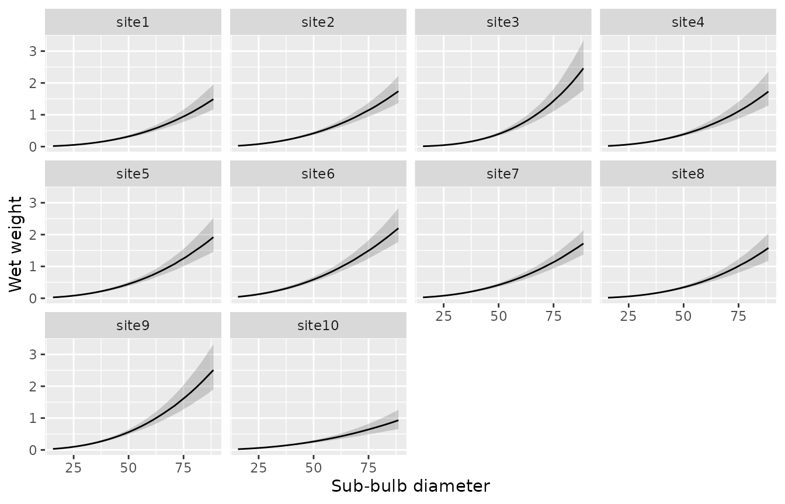

kelpbio fits Bayesian hierarchical Stan models to estimate kelp biomass from field measurements. This article walks through the allometric weight model for Nereocystis luetkeana, which relates wet weight to sub-bulb diameter with random effects for site and site-by-year. Further biomass components (plant size distribution, density, and wet-to-dry and carbon tissue conversions) are in development.
Under the hood, models are fitted with rstan. The Stan code is pre-compiled when the package is installed, so no separate Stan installation is required.
Providing data
The weight model is fitted to a data frame with a numeric
diameter, a numeric weight, and
site and year grouping factors. A small
simulated dataset is included with the package:
data_weight_sim_nereo
#> # A tibble: 234 × 4
#> diameter weight site year
#> <dbl> <dbl> <fct> <fct>
#> 1 53.8 0.412 site1 2019
#> 2 38.2 0.183 site1 2019
#> 3 25.2 0.059 site1 2019
#> 4 54.5 0.523 site1 2019
#> 5 25.6 0.06 site1 2019
#> 6 49.5 0.411 site1 2019
#> 7 63.7 0.693 site2 2019
#> 8 32.6 0.144 site2 2019
#> 9 44.5 0.166 site2 2019
#> 10 58 0.457 site2 2019
#> # ℹ 224 more rowskb_check_data_weight_nereo() confirms the data are in
the expected format, returning the data invisibly if the checks pass and
raising an informative error otherwise:
kb_check_data_weight_nereo(data_weight_sim_nereo)Fitting the model
kb_fit_weight_nereo() fits the model. Set
progress = "none" to silence the sampler’s console output,
and seed for a reproducible fit.
fit <- kb_fit_weight_nereo(
data_weight_sim_nereo,
chains = 2,
niters = 400,
seed = 42
)The short run above keeps the example quick; for a real analysis use
the defaults (chains = 4, niters = 1000) or
more.
Checking convergence
glance() returns a one-row summary of the fit, including
the sampler settings and the convergence diagnostics.
converged is TRUE when the split R-hat is
below its threshold (1.05 by default) and the effective sample size is
adequate.
glance(fit)
#> # A tibble: 1 × 8
#> n K nchains niters nthin ess rhat converged
#> <int> <int> <int> <dbl> <int> <dbl> <dbl> <lgl>
#> 1 234 10 2 400 1 201. 1.03 TRUESummarising the fit
tidy() returns the model terms with a point estimate and
compatibility limits. The intercept and slopes describe the allometric
relationship on the log scale; the s-prefixed terms are the
random-effect standard deviations.
tidy(fit)
#> # A tibble: 7 × 4
#> term estimate lower upper
#> <chr> <dbl> <dbl> <dbl>
#> 1 bWeight -1.47 -1.66 -1.24
#> 2 bDiameter 2.5 2.28 2.74
#> 3 bDiameter2 0.0749 -0.156 0.313
#> 4 sSite 0.27 0.176 0.459
#> 5 sSiteDiameter 0.313 0.169 0.62
#> 6 sSiteYear 0.0962 0.0521 0.149
#> 7 sWeight 0.161 0.141 0.185Priors
kb_priors_weight_nereo() returns the default priors,
which are weakly informative on the model’s centered log scale.
kb_priors_weight_nereo()
#> $intercept
#> normal(mean = 0, sd = 2)
#>
#> $diameter
#> normal(mean = 2, sd = 1)
#>
#> $diameter2
#> normal(mean = 0, sd = 0.5)
#>
#> $sd_site
#> exponential(rate = 1)
#>
#> $sd_site_diameter
#> exponential(rate = 1)
#>
#> $sd_site_year
#> exponential(rate = 1)
#>
#> $sd_residual
#> exponential(rate = 1)Adjust a prior by replacing an element with
kb_prior_normal() or kb_prior_exponential()
and passing the result to the priors argument of
kb_fit_weight_nereo():
priors <- kb_priors_weight_nereo()
priors$sd_site <- kb_prior_exponential(2)
fit <- kb_fit_weight_nereo(data_weight_sim_nereo, priors = priors, seed = 1)Predictions
kb_predict_weight_by() summarises the fitted
weight-diameter curve over a generated diameter sequence, one curve per
group named in by. Pass the result to
kb_plot_predictions() to plot the curve with its
compatibility band:
kb_predict_weight_by(fit, by = "site") |>
kb_plot_predictions()
kb_predict_weight() instead predicts at the rows of a
supplied data frame, returning a point estimate and compatibility limits
for each row:
new_data <- data.frame(diameter = c(20, 35, 50, 65, 80), site = "site1")
kb_predict_weight(fit, new_data)
#> <kb_predictions> predictor: diameter | response: weight | by: site
#> # A tibble: 5 × 5
#> diameter site estimate lower upper
#> <dbl> <chr> <dbl> <dbl> <dbl>
#> 1 20 site1 0.0302 0.0233 0.0396
#> 2 35 site1 0.125 0.0992 0.155
#> 3 50 site1 0.321 0.25 0.405
#> 4 65 site1 0.647 0.501 0.857
#> 5 80 site1 1.12 0.86 1.51Standard Bayesian tooling
The fitted object exposes the rstantools generics, so it
composes directly with bayesplot and loo. A
posterior-predictive check uses the stored yrep via
posterior_predict():
bayesplot::ppc_dens_overlay(
y = fit$data$weight,
yrep = posterior_predict(fit)
)Leave-one-out cross-validation uses the pointwise
log_lik():